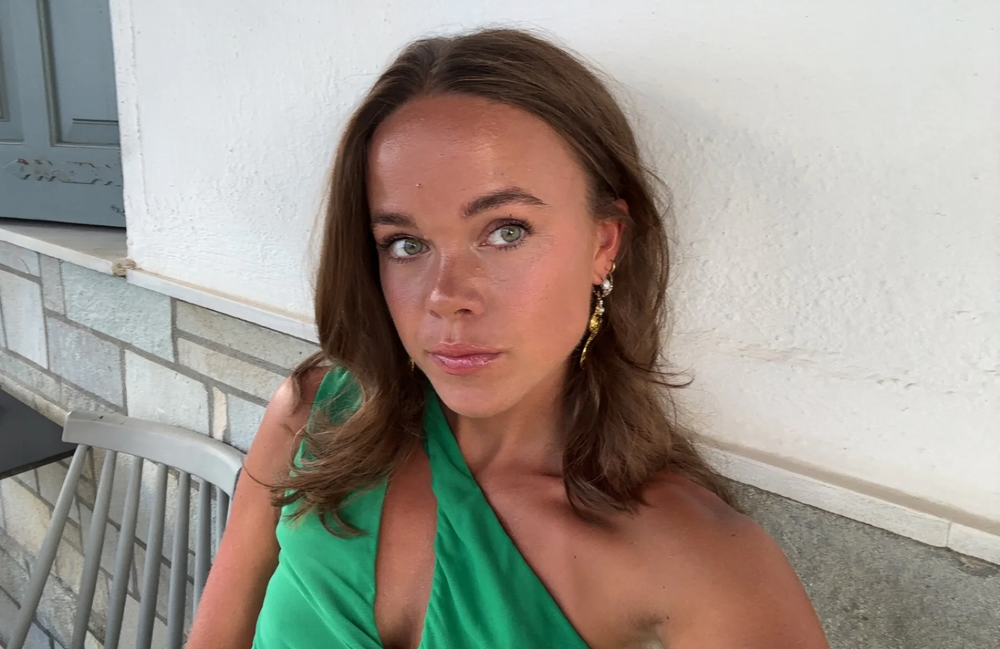
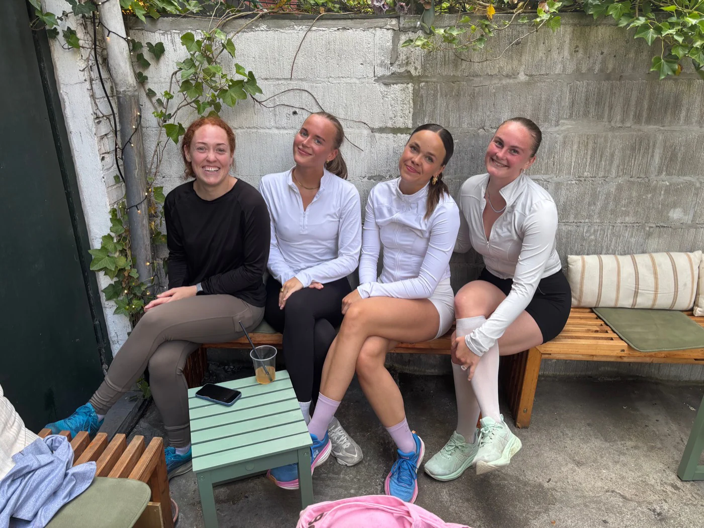
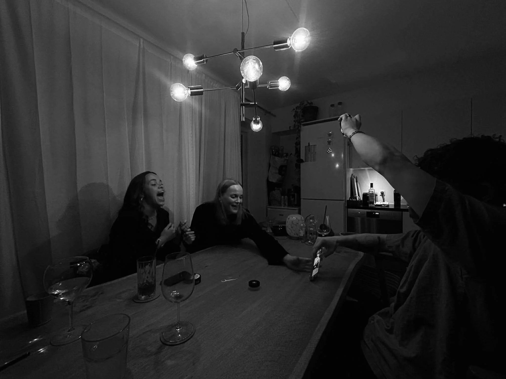
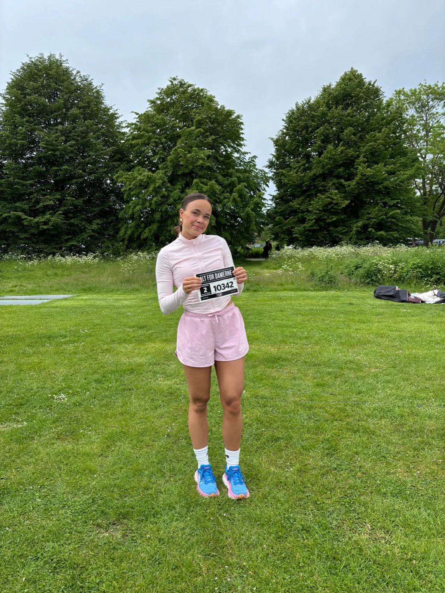
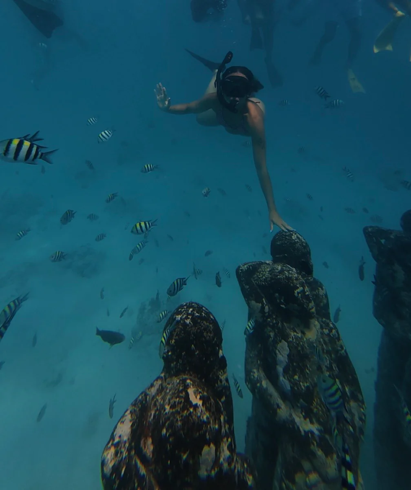
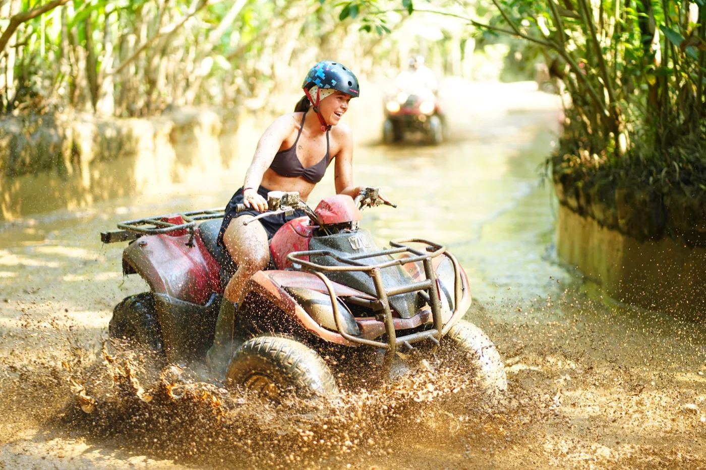
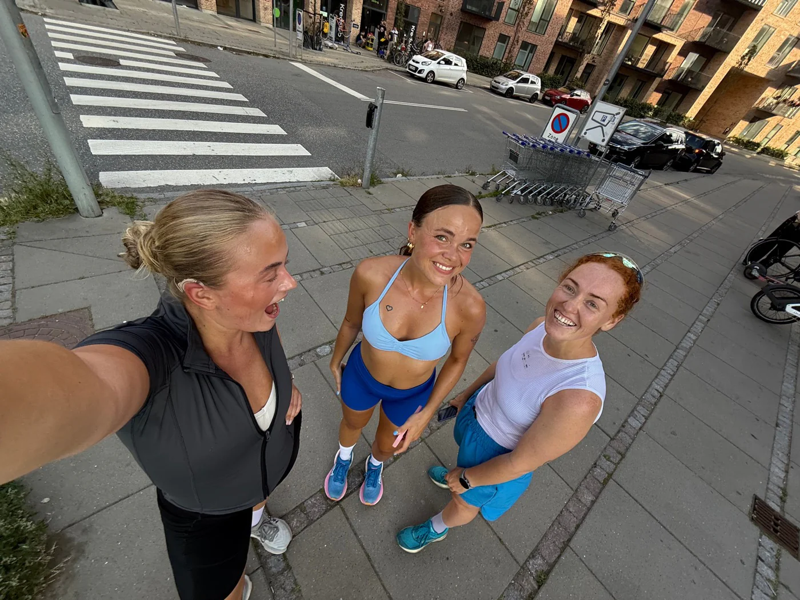
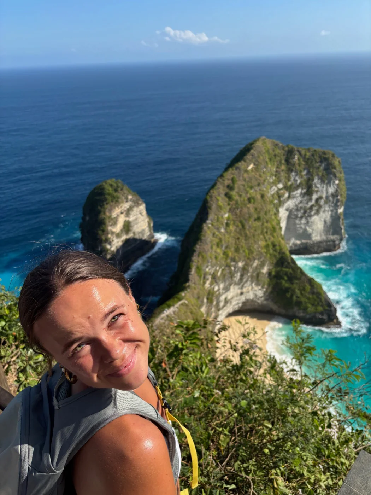

Who am I?
A little about my everyday life, interests and the things that keep me active.

Who am I?
Hi, I'm Emilie. I live in Aarhus with two roommates and would describe myself as open-minded, positive and always up for meeting new people. In my free time, you'll usually find me running, cycling or at the gym, where I also enjoy strength training and Pilates.
I also help organise and host the weekly Monday social run at OS Kaffe & Vin, creating a welcoming and social experience for participants.


Beyond Design
Alongside my studies, I have two part-time jobs. I work as a waitress at Centralværkstedet and as a social and healthcare worker at Hasle Hjemmepleje.
I have also recently started working with LadyBalance, helping create content for their new Instagram presence.
Explore
Travelling is one of the things that inspires me the most. I love experiencing new cultures, trying new food and discovering how differently people live and think around the world.
Living and working in Athens for two months gave me a completely new perspective on everyday life. It made me appreciate the work-life balance we have in Denmark and showed me how much you can learn by stepping into a different culture.




